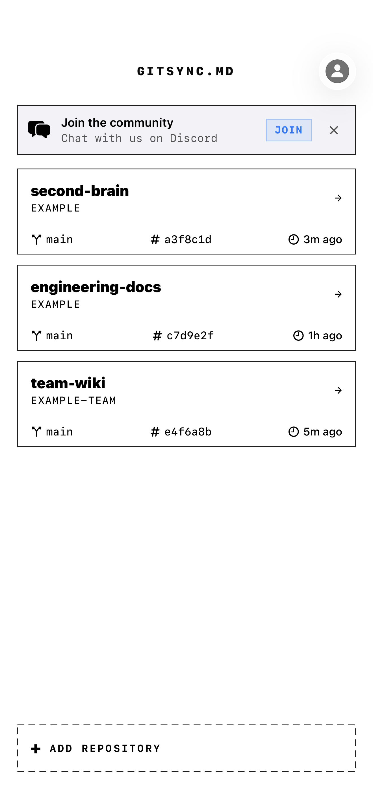
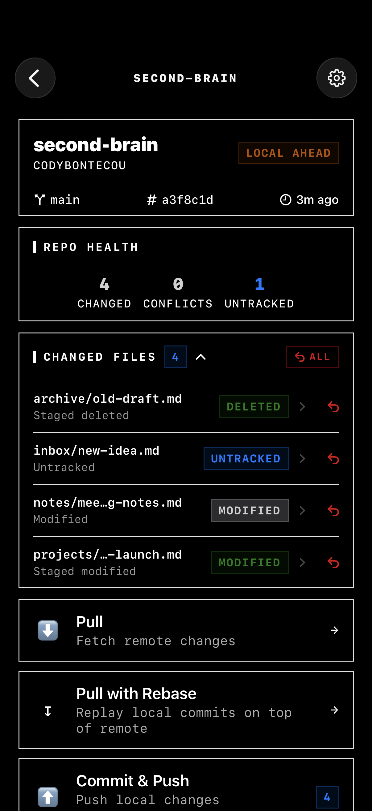
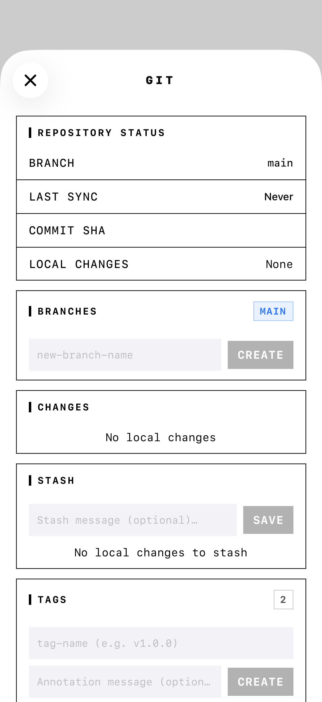

- If your vault is already on GitHub, clone it into Obsidian’s local folder. If it only exists on your phone, publish the local vault first.
- Install GitSync.md on your iPhone or iPad.
- Set GitSync.md's save location to a folder Obsidian can open, usually On My iPhone/iPad → Obsidian.
- Clone the vault repository with GitSync.md.
- Open the folder as a vault in Obsidian. Use GitSync.md for Git operations, or configure Obsidian Git with Connect for a supported GitHub account.
- Verify one incoming note and one outgoing commit before enabling automation.
Why Obsidian Git needs help on iOS
On desktop, Obsidian Git can use installed Git tools. On iPhone and iPad, the plugin uses a separate mobile implementation with its own limits. Apple’s app sandbox also makes the location of the local vault important.
GitSync.md provides a native Git client for that shared folder. It uses libgit2 to clone, pull, commit, and push real Git repositories locally on iOS. The result is a normal folder with a real .git directory, not a proprietary notes database or an API-only mirror. Obsidian can edit the Markdown files, and GitSync.md can sync the same working copy.



Before you start
You need three things:
- GitSync.md from the App Store.
- Obsidian on the same iPhone or iPad.
- A Git remote containing your vault. GitHub is the easiest path, but GitSync.md also supports manually entered remotes such as GitLab, Gitea, Bitbucket, or a self-hosted server over HTTPS token/password or SSH private key.
GitSync.md requires iOS 17 or iPadOS 17 or later and costs $19.99 once on the US App Store. Regional prices vary. Obsidian Git and GitSync.md Connect are separate community plugins; Connect requires GitSync.md 2.8.0 or later. Version 2.8.1 also supports connecting vaults published from a local folder.
Start with your existing vault
- Already in a Git remote: follow the clone instructions below. The repository root should be your vault root.
- Only on this iPhone or iPad: follow Publish a Folder to review your files, prepare an initial commit, and upload it to your personal GitHub account. Then return here to choose your daily Git workflow.
- On another device, but not in Git: commit and push the vault there first, then clone it on your phone.
Keep an independent backup before changing sync methods. Choose one automation path initially so two apps do not attempt Git operations at the same time.
If the Git repository contains another folder named after the vault, Obsidian may open the wrong level. Clone a repo whose root is the vault, or be deliberate about which folder you open as the vault.
1. Clone the vault into an iOS Files location Obsidian can open
For a general code or document repository, follow cloning a GitHub repository on iPhone. The steps below focus on an Obsidian vault.
Choose the save location
Open GitSync.md and set the default save location to a Files location that Obsidian can access. For an Obsidian-first setup, the most direct destination is:
On My iPhone → Obsidian
On My iPad → ObsidianThat puts the cloned Git repository directly in Obsidian's local file area. When the clone finishes, the folder is ready to open as a vault.
Add the remote repository
For GitHub, sign in with GitHub or paste a Personal Access Token, then pick the vault repo from your account. For a self-hosted remote, use manual repository entry and paste the clone URL:
https://git.example.com/team/notes.git
git@git.example.com:team/notes.git
ssh://git@git.example.com:2222/team/notes.gitChoose the matching authentication method: GitHub account, HTTPS token/password, SSH private key, or no authentication for a public repo. Credentials are stored in the iOS Keychain.
Clone it locally
Tap the repo in GitSync.md and clone it. GitSync.md writes the files and the full .git directory to your selected Files location. That local working copy is what Obsidian and GitSync.md will share.
2. Open the cloned folder in Obsidian
Open Obsidian on your iPhone or iPad. If you are at the vault picker, choose Open folder as vault. Navigate to the folder GitSync.md cloned, usually inside On My iPhone/iPad → Obsidian, and open it.
Your notes should appear like they do on desktop. If your .obsidian configuration is committed to the repo, themes, snippets, and plugin settings may already be present. If not, configure the mobile vault normally.
3. Configure Obsidian Git for mobile sync
You have two choices. Both use the same local notes, but the app performing Git operations needs its own authentication.
- GitSync.md handles Git: edit in Obsidian, then use GitSync.md to pull, review, commit, and push. The Obsidian Git plugin is optional for this route. GitSync.md supports its own HTTPS and SSH authentication.
- Obsidian Git handles Git: install and enable Git by Vinzent in this vault. For GitHub HTTPS repositories using GitSync.md’s GitHub Account authentication, follow the Connect setup tutorial. For manual GitHub credentials, use the Personal Access Token guide. Connect does not add SSH support or change the plugin’s mobile Git implementation.
To hand a Git action to GitSync.md from a note, use its URL scheme. Paste it into a note and tap it, or use an Apple Shortcut. The repo value should match the vault folder name shown in GitSync.md:
syncmd://x-callback-url/sync?repo=MyVault&message=Update%20from%20ObsidianThe sync action pulls first, then stages local changes, commits them with the message you pass, and pushes back to the remote. You can also call individual actions if you want separate buttons:
syncmd://x-callback-url/pull?repo=MyVault
syncmd://x-callback-url/push?repo=MyVault&message=Update%20from%20Obsidian
syncmd://x-callback-url/status?repo=MyVaultIt lets Obsidian hand the Git operation to GitSync.md, where the local repository, credentials, and libgit2 implementation already live. The link switches apps while GitSync.md performs the operation.
Verify your first pull and push
- Create a small test note in the remote repository from another device. Pull with the Git client you chose, then open the note in Obsidian.
- Edit that note on your iPhone. Review and commit the change, then push.
- Open the remote repository and verify the new commit and exact note contents. If either direction fails, use the Obsidian Git troubleshooting guide before enabling automation.
Get GitSync.md for iPhone and iPad →
4. Daily workflow on iPhone and iPad
A good mobile rhythm is simple:
- Pull before editing. Tap your
syncmd://pull link, run a Shortcut, or open GitSync.md and pull the vault. - Edit notes in Obsidian. Create daily notes, update project notes, capture inbox items, or work in split view on iPad.
- Sync after editing. Trigger the
syncmd://x-callback-url/syncURL or use GitSync.md to commit and push. - Review changes when needed. Open the repo in GitSync.md to inspect changed files, branch state, diffs, conflicts, tags, or stashes before pushing.
On iPad, the same setup works with more room: keep Obsidian and GitSync.md side by side, write in Obsidian, then glance at GitSync.md's repo view before pushing.
GitHub and self-hosted remotes both work
GitHub is the fastest setup because GitSync.md can browse your account repositories after sign-in. Self-hosted Git is still supported: paste the remote URL manually, choose HTTPS token/password or SSH private key, and clone into the same Obsidian Files location.
After the repository exists locally, Obsidian does not need to know whether the remote is GitHub, GitLab, Gitea, Bitbucket, or a private server. It edits files in the local vault folder; GitSync.md handles the remote protocol when you sync.
Troubleshooting
For a symptom checklist covering authentication, missing vaults, conflicts, and delayed automation, see Obsidian Git not working on iPhone.
Obsidian does not show the vault
Check where the repo was cloned. For the easiest Obsidian workflow, clone into On My iPhone/iPad → Obsidian, then use Open folder as vault from Obsidian's vault picker.
Obsidian Git says there is no Git repository
Make sure you opened the cloned repository folder, not its parent folder. The folder you open should contain the hidden .git directory that GitSync.md created.
Push fails from mobile
Open GitSync.md and verify the repo can pull or push there. If GitSync.md cannot authenticate, update the repository's auth method or token. For self-hosted SSH remotes, confirm the private key, passphrase, host, and port.
The sync URL does not find the repo
The repo query parameter must match the vault folder name in GitSync.md. If your folder is named second-brain, use repo=second-brain, not the remote repository title from your Git host.
Recap
Obsidian Git on iPhone and iPad works best when you separate responsibilities: Obsidian edits Markdown, GitSync.md owns the real local Git working copy, and iOS Files is the bridge between them. Clone once, open the folder as a vault, then use syncmd:// automation or GitSync.md's own controls to pull, commit, and push.